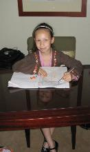
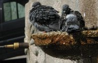
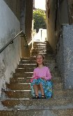
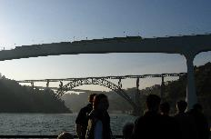

In Madrid (8/9/07) I walked to the hotel swimming pool. After that we walked to a shop and bought our food.
On Sunday (9/9/07) it was my mum's birthday. We had a rushed breakfast. My dad and I had a present for my mum. I gave her boats like Russian dolls. After that we got a shuttle bus to the airport and flew to Portugal. We got to Portugal just in time for my dad's conference banquet lunch and that was the end of our flying for six days.
I went on a river cruise with all of my dad's work colleagues. There were lots of people on the boat. We could sit down on the top of the boat and see the river. You could see very old houses and bridges. There was a cloud or fog that came down low, all around the boat and made me and my mum cold. It was a lot of fun on the boat. After that we went to the Taylor's Port cellars and I was helping the tour guide and then I had some chips. Then me and my mum got a taxi home and went to bed.
   